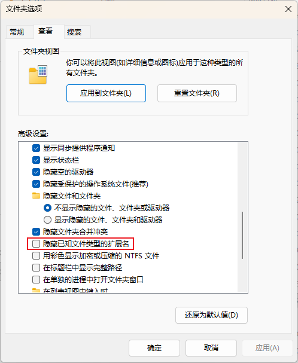
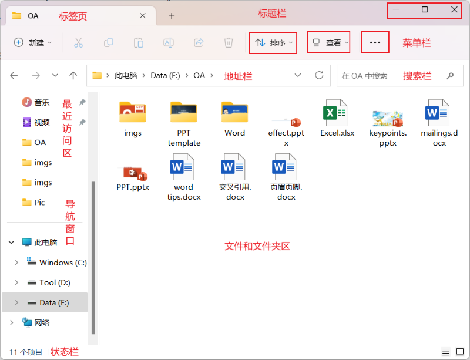
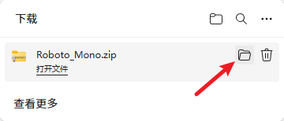

<Filename>[.<Extension>］
| item | desc |
|---|---|
| 文本 Text | .txt 纯文本
.docx: Word 文档 .xlsx: Excel 工作表 .pptx: PowerPoint 演示文稿 .pdf: Adobe Acrobat 文档 .csv: 逗号分隔值文件，常用于数据交换，可用Excel或文本编辑器打开 |
| 图像 Image |
.jpg / .jpeg: 最常见的压缩图片格式，适合照片，文件较小 .png: 支持透明背景的无损压缩图片，适合图标、网页素材 .gif: 支持动画的图片格式，色彩较少 .bmp: 位图，未压缩，文件较大，画质高 .tif: TIFF 图像文件 .ico: 图标文件 .svg: 可缩放矢量图形，放大不失真，常用于网页图标 .psd: Adobe Photoshop 源文件，保留图层信息 .ai: Adobe Illustrator 矢量图源文件 |
| 音频 Audio |
.mp3: 有损压缩音频格式，兼容性好 .wav: 未压缩的波形音频，音质高但文件大 .wma: Windows Media Audio 音频文件 .aac: 高级音频编码，效率优于MP3，常用于Apple设备 .ogg: 流音频文件 |
| 视频 Video |
.mp4: 最通用的视频格式，兼容几乎所有设备和平台 .wmv: Windows Media Video 视频文件 .avi: 音频视频交错格式，老牌格式，文件通常较大 .mkv: 多媒体容器，可封装多种音轨和字幕，常用于高清电影 .flv: Flash 视频；已逐渐淘汰，在旧网页视频中常见 .mov: Apple QuickTime 视频格式，常用于Mac环境和专业剪辑 |
| 可执行文件 Executables |
.exe: 可执行文件 .bat / .cmd: Windows 批处理脚本 .sh: Linux/Unix Shell 脚本 .msi: Windows 安装程序包 .dll: Windows 动态链接库文件 |
| 源代码文件 Code |
.c：c 源文件 .cppp：c++ 源文件 .py：Python 源文件 .java：Java 源文件 .sql: SQL 数据库查询脚本 |
| 网页 Page |
.html: 网页文件 .css: 样式表文件 .js: JavaScript 文件 |
| 字体文件 Font |
.ttf: TrueType 字体 .otf: OpenType 字体 .woff / .woff2: Web 开放字体格式，用于网页 |
| 压缩文件 Compressed |
.zip: 压缩文件 .rar: 压缩文件 .7z: 压缩文件 .tar: 压缩文件 .gz: 压缩文件 .iso: 光盘镜像文件 |


| item | shortcut | desc |
|---|---|---|
| 全选 | Ctrl + A | 选择当前目录下所有文件；All |
| 复制 | Ctrl + C | 创建一个新的同样的文件，默认情况下文件名带有copy字样，需重命名；Copy |
| 剪切 | Ctrl + X | 从当前位置移到另外一个位置 |
| 粘贴 | Ctrl + V | 将复制的或剪切的文档粘贴到当前位置 |
| 重命名 | F2 | 要先选择文件 |
| 删除 | Del | 删除文件到回收站；Delete |
| 彻底删除 | Shift + Del | 彻底删除文件，谨慎操作；也可以设置回收站属性，不中转而直接删除 |
| 创建新文件夹 | Ctrl + Shift + N | 创建一个新文件夹；New |
